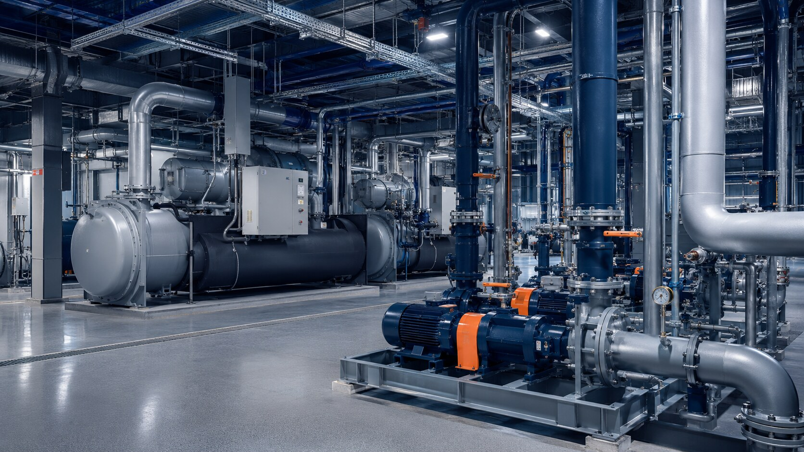
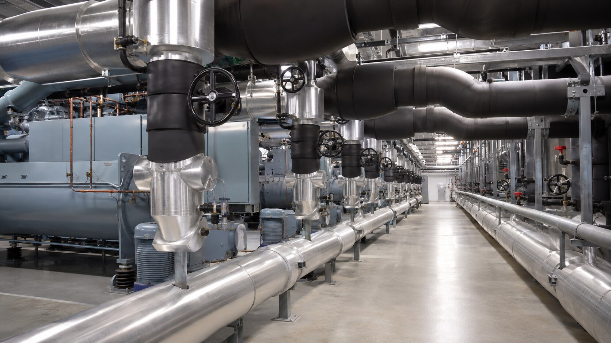
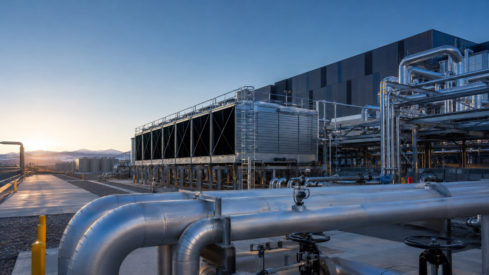
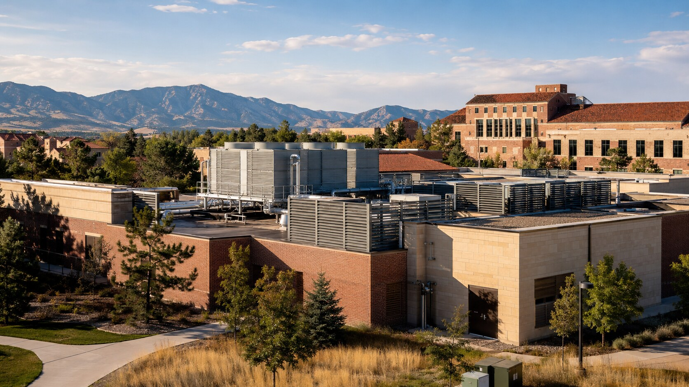
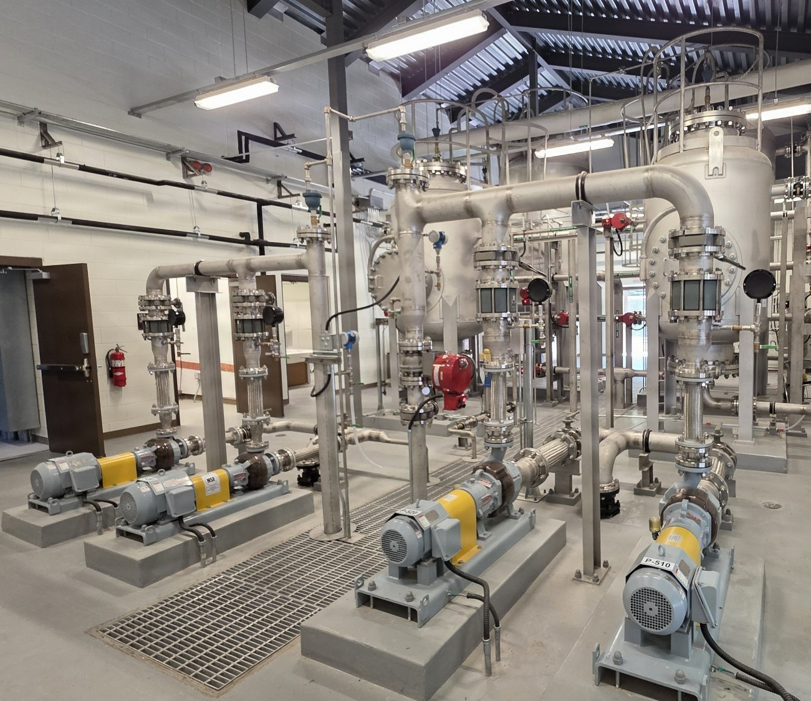

Advanced
Refrigeration Inc.
Equipment · Controls · Commissioning

Colorado-based mechanical systems delivery
Equipment expertise, process piping, installation, startup, and commissioning under one coordinated team.
One team. Complete cooling scope.
Complex cooling projects develop problems when equipment, piping, controls, installation, and startup are planned as isolated scopes. Colorado Commercial Cooling Systems was formed to coordinate those decisions around the performance and operation of the entire plant.
Capacity, equipment layout, service access, piping routes, supports, testing, flushing, controls interfaces, commissioning requirements, and final turnover are considered together—before gaps become field conflicts.
Meet the partnership →
Core capabilities
Purpose-built coordination for projects where cooling cannot be treated as a collection of separate scopes.
Chiller sourcing, machinery installation, controls coordination, startup, and commissioning.
Explore capability → 02⌘Shop-fabricated and field-installed piping delivered around the complete mechanical package.
Explore capability → 03↻One team from equipment selection through fabrication, installation, turnover, and commissioning.
Explore capability →Markets we understand

◉ 24 / 7Mission-critical
Uptime, phased cutovers, redundancy, quality documentation, and schedule certainty.
View market expertise →
▦ CO / STATEWIDEPublic infrastructure
Cooling systems for public facilities, campuses, utilities, and essential operations.
View market expertise →
◌ ACTIVE / PLANTTreatment infrastructure
Process piping, equipment connections, phased tie-ins, and documented turnover for operating treatment facilities.
View market expertise →Equipment · Controls · Commissioning
Fabrication · Installation · Tie-ins
Local execution. Technical accountability. Complete-system thinking.
Bring us in early
Let’s review equipment, piping, phasing, procurement, and commissioning as one complete system.
Start the conversation →